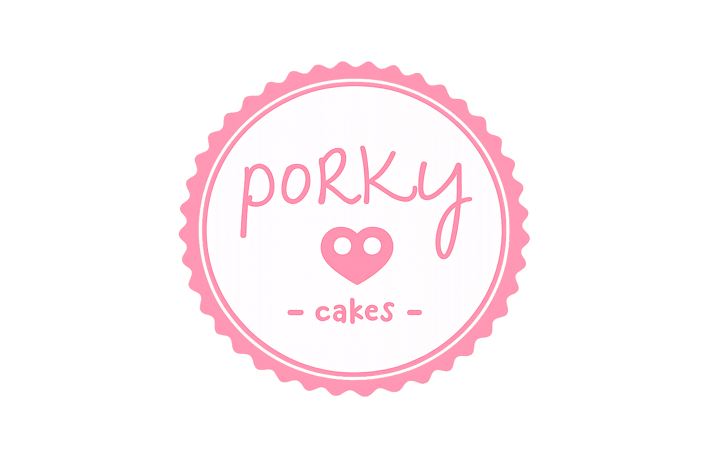
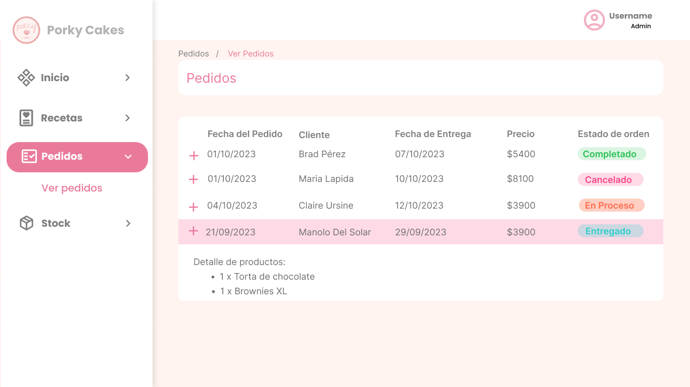
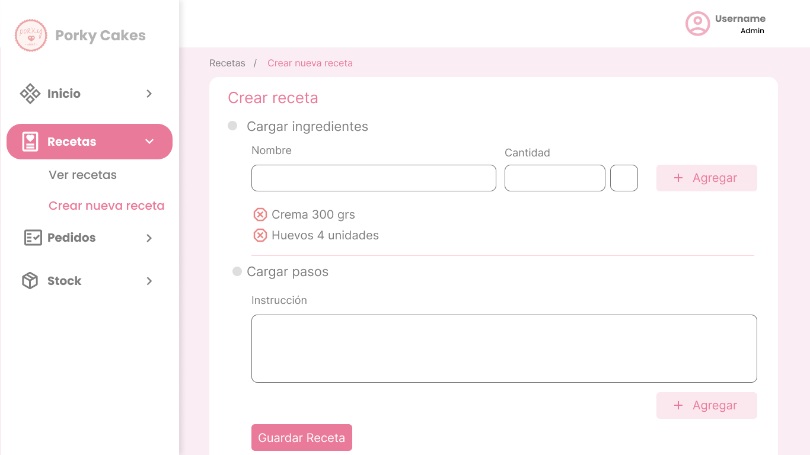
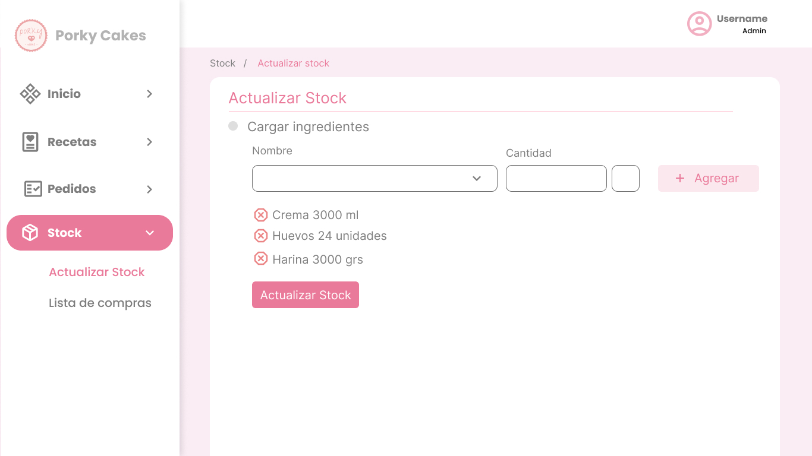
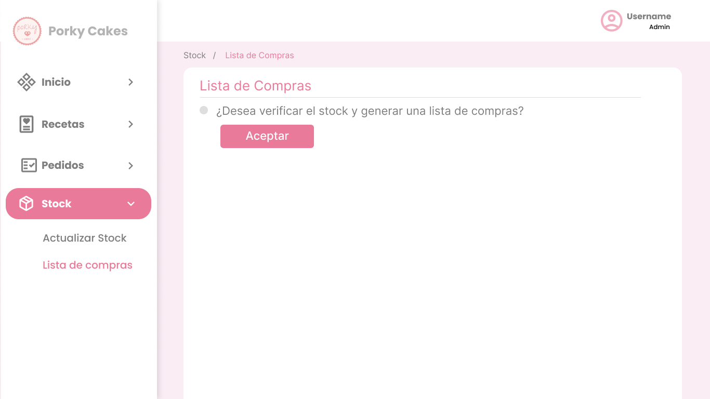
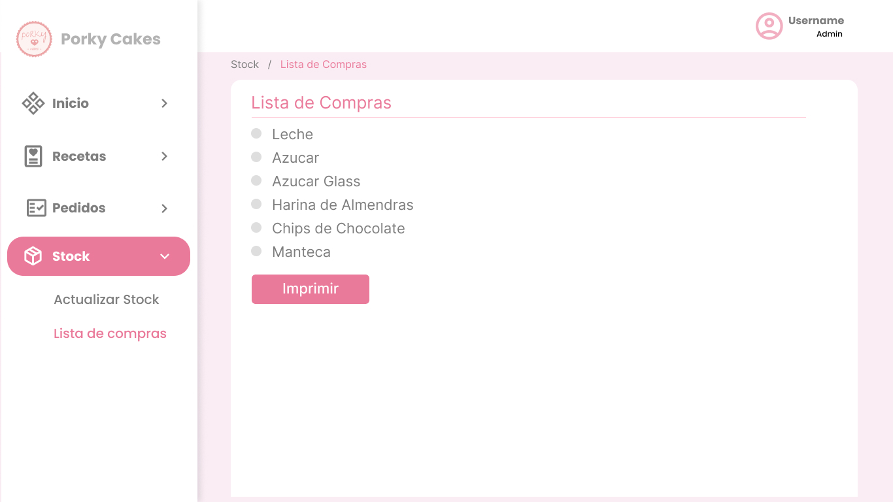

Backend · Análisis funcional · Facultad
Análisis, diseño e implementación del sistema para Porky Cakes, un emprendimiento de repostería: pedidos, recetas y stock de insumos.

Porky Cakes es un emprendimiento de repostería de General Pico llevado adelante por una sola persona, que vende tortas y postres a través de Instagram y WhatsApp. Todo el proceso —presupuestar, comprar insumos, producir y entregar— lo manejaba a mano, con los precios de productos e ingredientes anotados en un Excel. Este fue el trabajo final de la materia Análisis y Diseño de Sistemas II (Facultad de Ingeniería, UNLPam, cursada 2023), en equipo con Nicolás Lucero y Martín Dal Santo: relevamos ese proceso real y lo convertimos en el análisis, diseño e implementación de un sistema de gestión.
El proyecto contiene el código y la documentación completa del sistema: desde el modelo de dominio hasta la implementación de patrones de diseño como Facade, Singleton y DAO con Abstract Factory. Expusimos una API con endpoints para las operaciones CRUD sobre recetas, ingredientes y pedidos, registramos los accesos de los usuarios en un archivo de logs, y documentamos la arquitectura con la vista de componentes y conectores de Clements.
El administrador lista los pedidos con nombre del cliente, fechas de realización y entrega, precio y estado. Puede filtrarlos, ordenarlos por distintos atributos, o ver el detalle de productos y método de pago de cada uno.
Permite cargar una receta nueva al recetario del sistema: se selecciona el producto al que pertenece, se ingresan el tiempo de preparación y las porciones, y se completan los ingredientes y los pasos de preparación.
El administrador selecciona el ingrediente al que quiere cambiarle el stock, completa la cantidad y confirma la operación; el sistema la guarda y la muestra actualizada.
El sistema genera automáticamente una lista de los ingredientes a comprar según el stock actual, con la opción de imprimirla.
Usamos los patrones Facade, Singleton y DAO con Abstract Factory para separar responsabilidades entre controladores, DAOs y modelo. La arquitectura quedó documentada con una vista de componentes y conectores: el navegador se comunica por HTTP con PorkyApp (una aplicación JavaEE), que accede por JDBC a la base de datos administradora.




